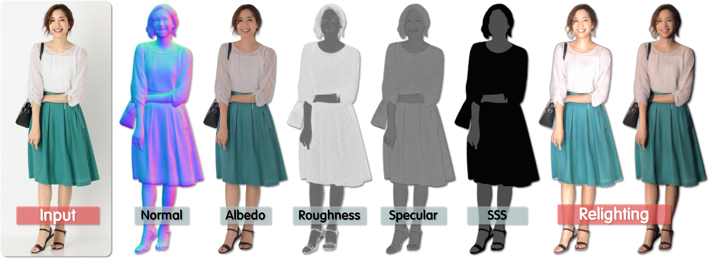

YU JIANG / WUHAN UNIVERSITY
About me
I am a Ph.D. student in the School of Computer Science at Wuhan University. My research focuses on physics-based rendering, human material estimation, and relighting.
I study how to recover surface reflectance and geometry from images, with a particular focus on human appearance. My recent work explores the use of learned priors and synthetic-to-real adaptation to estimate human materials and render people under new lighting.
My broader research interests include 3D reconstruction, neural rendering, and remote sensing image change detection.
Research spotlight

Human materials from a single image
Illumination-aware synthetic-to-real adaptation for recovering physically based human materials and enabling relighting on real photographs.
Publications
2026
HumanPro: Single-view 3D Clothed Human Reconstruction with Progressive Normal Guidance
Proceedings of the AAAI Conference on Artificial Intelligence (AAAI)
2025
JumpingGS: Level-jump 3D Gaussian Representation for Delicate Textures in Aerial Large-scale Scene Rendering
ACM Transactions on Graphics (SIGGRAPH Asia)
iG-6DoF: Model-free 6DoF Pose Estimation for Unseen Object via Iterative 3D Gaussian Splatting
IEEE/CVF Conference on Computer Vision and Pattern Recognition (CVPR)
2022
NeuralRoom: Geometry-Constrained Neural Implicit Surfaces for Indoor Scene Reconstruction
ACM Transactions on Graphics (SIGGRAPH Asia)
WRICNet: A weighted rich-scale inception coder network for remote sensing image change detection
IEEE Transactions on Geoscience and Remote Sensing
2020
Change detection method for high-resolution remote sensing image based on multi-scale and sparse convolution
Journal of Chinese Computer Systems
2019
Optimization Design of Internet Fraud Case Based on Knowledge Graph and Case Teaching
International Conference on Information and Education Technology (ICIET)
Interdisciplinary publications 5 entries
2026
Legal Protection of Cancer Patients' Health and Genomic Data Privacy
Cancer Nursing
Unraveling the balance between personal data protection and public interest: a theoretical framework and its empirical application in personal data processing
Journal of Chinese Governance, 11(2), 317–338First published online in 2025.
2025
Theoretical and Practical Aspects of Data Asset Monetization in Maritime Enterprises
Fudan Journal of the Humanities and Social Sciences, 18(4), 657–685First published online in 2024.
Legal Criteria for the Adjudication of Public Interest In Disputes over Data Rights: Incorporating the Significance of Personal Information Protection for Citizens' Mental Health and Social Trust
Current Opinion in Psychiatry, 38, e-Supplement 2, e37Supplement entry 109.
Education
2021 – Present
Wuhan University
Ph.D. in Computer Science and Technology
School of Computer Science
Research: Physics-based human material estimation
2018 – 2021
Jiangxi Normal University
Master's in Computer Technology
School of Computer and Information Engineering
Research: Remote sensing image change detection and knowledge graphs
2014 – 2018
Minnan Normal University
Bachelor's in Information Management and Information Systems
School of Computer Science
Research experience
Collaborative projects between Wuhan University and Huawei in spatial information technology.
2024 – 2026
Photorealistic 3D asset generation for street scenes
Investigated algorithms for physically based rendering assets and created asset datasets.
2023 – 2024
Neural rendering of aerial outdoor scenes
Studied and evaluated large-scale scene material reconstruction methods. Developed algorithms for the material reconstruction subtask.
Honors & awards
- Annual Student Award, School of Computer ScienceWuhan University
- Advanced Individual AwardWuhan University
- National First Prize · Runner-up5th China Graduate AI Innovation Competition, Huawei Cup
- Gold Quality AwardHuawei Ascend